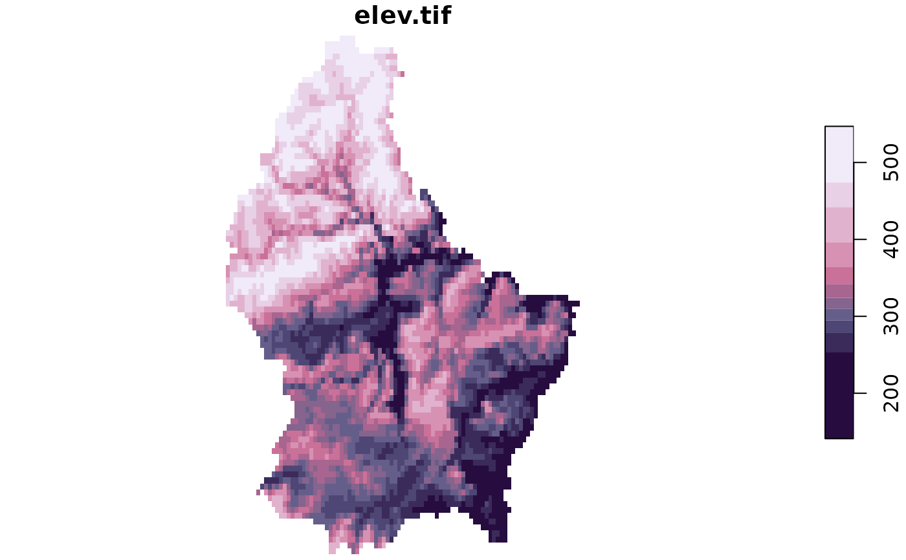
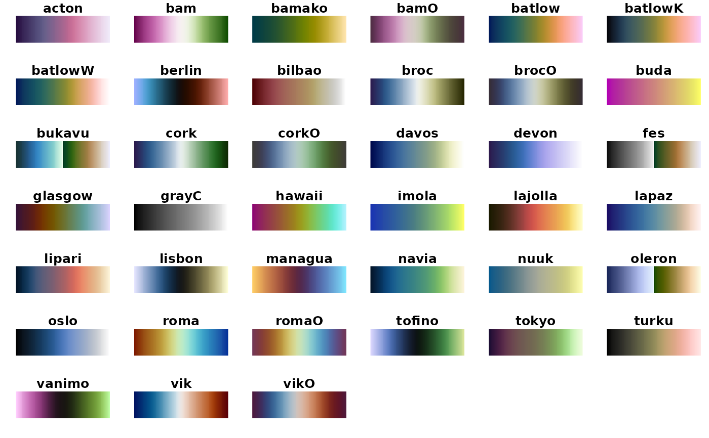

plot a 'SpatRaster' or 'stars' object using {scico} palettes. View palette
options with sciplot_pals()
Usage
sciplot(x, pal = "acton", n, direction, centre, ...)
# S3 method for class 'SpatRaster'
sciplot(
x,
pal = "acton",
n = 256,
direction = 1,
centre = FALSE,
n_quantile = NULL,
...
)
# S3 method for class 'stars'
sciplot(x, pal = "acton", n = 11, direction = 1, centre = FALSE, ...)
sciplot_pals()Arguments
- x
object to plot, either a SpatRaster or stars object
- pal
Default is 'acton'. Character describing colour palette to use. choose from
sciplot_pals()- n
Numeric of length 1. The number of breaks/colours to include in the sclae
- direction
Default is 1. Direction of colour palette to reverse use -1.
- centre
Logical. If TRUE, the palette is centred around zero. good for bivariate/split palettes.
- ...
additional args passed to plot.
- n_quantile
Numeric. if not NULL sets the number of quantile breaks to use for sciplot.SpatRaster. See details.
Value
character vector of scico palette names.
see scico::scico_palette_names()
Details
n_quantile sets quantile breaks for the colour palette. When using breaks, terra::plot does not support continuous legend as is the default in stars.
sciplot_pals plots the various sciplot palettes and returns their names as a
character vector. Wrapper for scico::scico_palette_show()
and scico::scico_palette_names().
Examples
f <- system.file("ex/elev.tif", package = "terra")
r.stars <- stars::read_stars(f)
sciplot(r.stars)

sciplot_pals()

#> [1] "acton" "bam" "bamako" "bamO" "batlow" "batlowK" "batlowW"
#> [8] "berlin" "bilbao" "broc" "brocO" "buda" "bukavu" "cork"
#> [15] "corkO" "davos" "devon" "fes" "glasgow" "grayC" "hawaii"
#> [22] "imola" "lajolla" "lapaz" "lipari" "lisbon" "managua" "navia"
#> [29] "nuuk" "oleron" "oslo" "roma" "romaO" "tofino" "tokyo"
#> [36] "turku" "vanimo" "vik" "vikO"